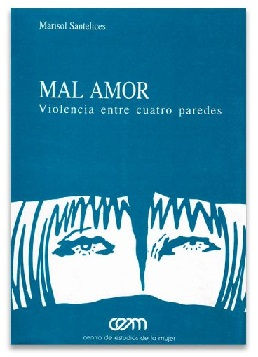
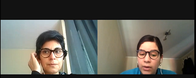
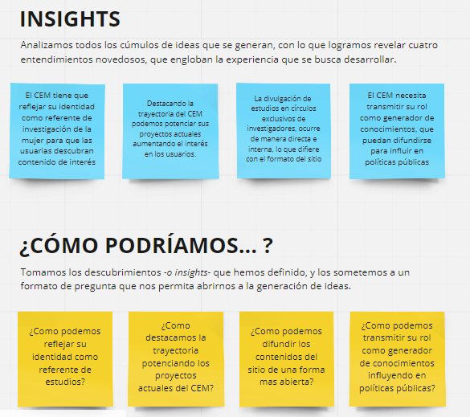
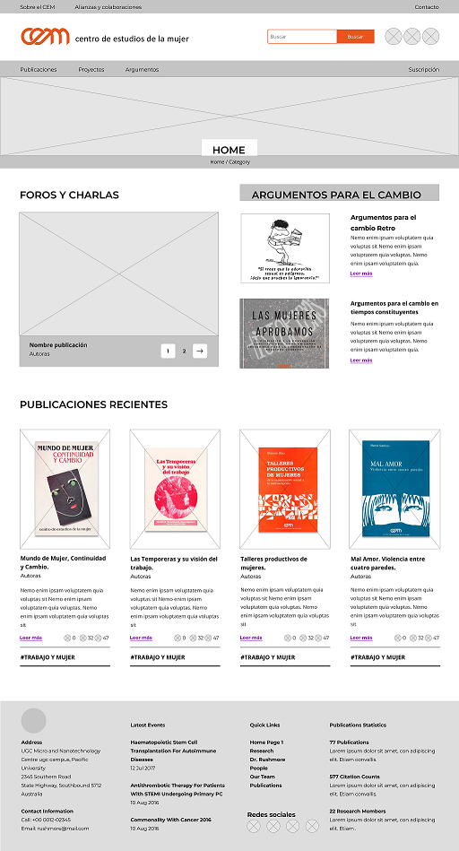

Se nos planteo como desafío generar una propuesta de diseño de la página web del Centro de Estudio de la Mujer, surge la necesidad de mejorar la experiencia de las usuarias que desean saber más de las actividades que realiza y sobre todo, documentarse sobre las investigaciones y publicaciones que ha realizado el CEM a lo largo de su trayectoria, además de demostrar la importancia que ha tenido este centro en las políticas públicas en los 35 años de haberse fundado.
Se realizó un proceso de investigación exhaustivo para poder conocer al cliente y a los stakeholders y saber con exactitud cuáles son las necesidades de los interesados, e ir definiendo hacia donde podemos dirigir la nueva propuesta web que se va a realizar. La primera fase de este diseño web se basó en entrevistas y testeos a las stakeholders, y además para poder determinar la usabilidad que tiene la página actual se hizo un análisis heurístico. Con estos primeros pasos pudimos conocer algunos puntos de oportunidad de mejora que tiene la página actual del CEM.
Se definieron dos tipos de usuarias, la usuaria académica y la usuaria que a pesar de no ser académica le interesa de cierta forma los estudios de genero, esto debido a que la cliente le surge la necesidad de incluir nuevas usuarias que visiten su página, por tanto es importante tomar en cuenta a todo tipo de usuarias que tenga un mínimo de interés en este tema. Se realizó un mapa de empatía para describir y conocer a estas dos usuarias ideales, ver cuál es el problema que tienen realmente y poder definir una propuesta de valor para el nuevo producto.

Además, para conocer mucho más a la usuaria y que nuestro diseño este centrado en ellas, se realizó un Journey Map junto con un Storyboard. Esto con el fin de analizar como es la interacción de nuestra usuaria al momento de usar la web y cuáles son sus puntos de dolores en la navegación que ellas tienen.

Luego de esta fase, se realizó la etapa de síntesis e ideación, donde se determinaron los grandes hallazgos o insigth y se definieron las posibles soluciónes mediante ideas y propuestas. Recordando que para llegar a estos grandes hallazgos, no fue de manera fortuita ya que están basados en la investigación excautiva previa que realizo el equipo de UX.
Se realizó un wireframe cuyos elementos fueron testeados a través de un Tree Testing, este testeo es de suma importancia para tener un buen producto final, ya que este nuevo diseño debe satisfacer las necesidades del usuario y luego se empezó a definir el prototipo de alta fidelidad.
Como resultado, se obtuvo un diseño actual y moderno, siguiendo la gama de colores institucional, tomando en cuenta la usabilidad y accesibilidad, basándonos en las necesidades de las usuarias y del cliente para realizar este rediseño web.